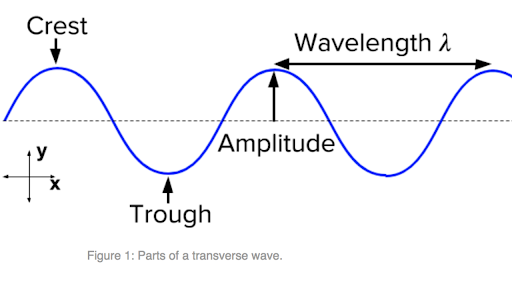
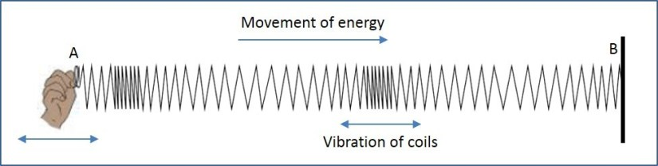

Sound is the set of vibrations that travel through the air or another medium in the form of waves and produce the sensation of hearing when they reach a person's or animal's ears. It is not measurable as it also depends on the listener's ears. Sound waves also require a medium to propagate.
Sound waves are of two types:
Sound travels through solids in the form of transverse waves. A transverse wave is a moving wave whose oscillations (one two and fro motion of the particles) are perpendicular to the direction of the wave or path of propagation. A simple example is given by the waves that can be created on a horizontal length of string by anchoring one end and moving the other end up and down.
Sound is transmitted through gases, plasma, and liquids as longitudinal waves, also called compression waves. Longitudinal waves are waves in which the displacement of the medium is in the same direction as, or the opposite direction to, the direction of propagation of the wave.
Echoes are an interesting phenomenon that can be experienced when sound reflects off a surface and re-enters our ears to make it sound like the sound is repeating itself. This happens mostly in large rooms and caves.
The delay of an echo is directly proportional to the distance of the reflecting surface from the source and the listener. If the listener is further away, he/she wil hear the echo after a longer period of time.
Ultrasonic, infrasonic and sonic waves are types of waves that are categorized based on their frequencies and their audibility to humans
Ultrasonic waves or ultrasound are sound waves that have too high a frequency for humans to hear. Some examples are:
Infrasonic waves are sound waves that have too low a frequency for humans to hear. Some examples are:
The sonic or audible range includes the sounds of frequency that can be heard by humans. This range is around 20 Hz - 20 kHz. Human infants can actually hear frequencies slightly higher than 20 kHz, but lose some high-frequency sensitivity as they mature. The upper limit in average adults is often closer to 15 to 17 kHz.